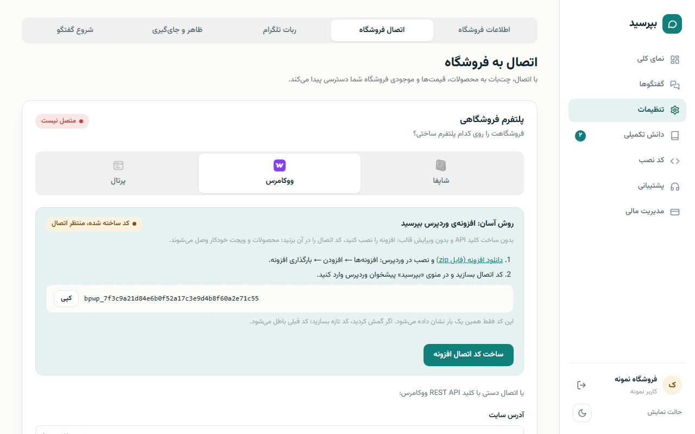
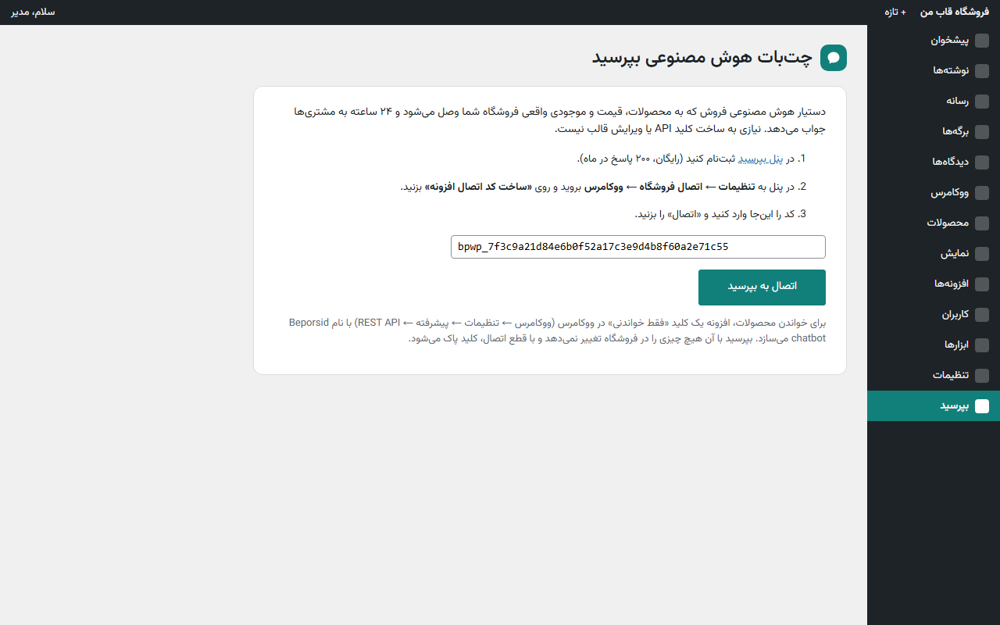
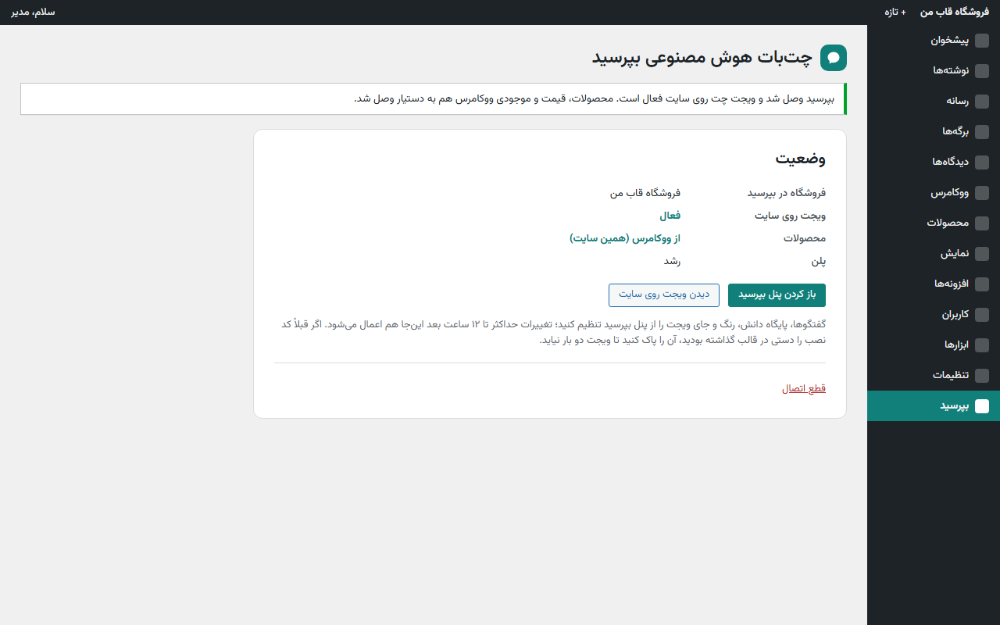
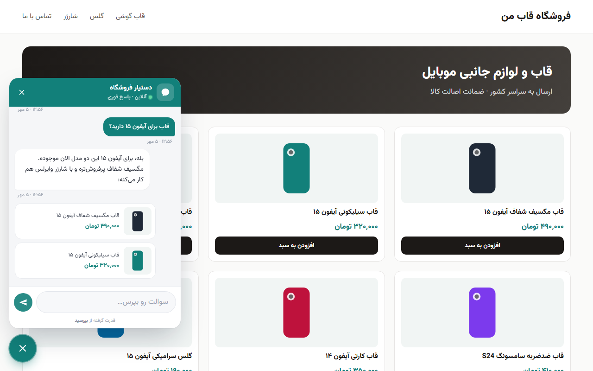

چتبات هوش مصنوعی فروش برای وردپرس و ووکامرس
بپرسید یک دستیار هوش مصنوعی فارسی است که روی سایت شما، بهجای شما و بهصورت ۲۴ ساعته به سؤال مشتریها جواب میدهد. به محصولات، قیمت و موجودی واقعی ووکامرس وصل میشود، محصول جایگزین پیشنهاد میدهد، وضعیت سفارش را میگوید و هر جا لازم باشد گفتگو را به شما میسپارد.
این افزونه نصب را ساده میکند: نه کلید API لازم است و نه ویرایش قالب. فقط یک کد اتصال از پنل بپرسید میگیرید و در افزونه وارد میکنید.
به آدرس https://api.beporsid.com/dashboard.html بروید و با شمارهی موبایلتان ثبتنام کنید. پلن آغازین رایگان است و هر ماه ۲۰۰ پاسخ دارد؛ کارت بانکی لازم نیست.
beporsid-chatbot.zip را دانلود کنید.در پنل بپرسید به تنظیمات ← اتصال فروشگاه ← ووکامرس بروید و در کادر «روش آسان: افزونهی وردپرس بپرسید» روی «ساخت کد اتصال افزونه» بزنید و کد را کپی کنید.

در پیشخوان وردپرس منوی «بپرسید» را باز کنید، کد را در کادر بچسبانید و «اتصال به بپرسید» را بزنید.

با زدن این دکمه، افزونه خودکار این کارها را انجام میدهد:
Beporsid chatbot میسازد تا دستیار بتواند محصولات و وضعیت سفارش را بخواند. بپرسید با این کلید هیچ چیزی را در فروشگاه تغییر نمیدهد.بعد از اتصال، صفحهی افزونه وضعیت را نشان میدهد: فروشگاه، فعال بودن ویجت، منبع محصولات و پلن.

سایت را باز کنید؛ حباب چت در گوشهی صفحه دیده میشود. یک سؤال دربارهی یکی از محصولاتتان بپرسید:

| مشکل | راهحل |
|---|---|
| «کد اتصال نامعتبر است» | کد را کامل (با bpwp_) کپی کنید. اگر بعد از آن کد تازهای ساختهاید، کد قبلی باطل شده است. |
| «ارتباط با سرور بپرسید برقرار نشد» | میزبان سایت درخواستهای بیرونی را بسته است. از پشتیبانی هاست بخواهید دسترسی به api.beporsid.com را باز کند. |
| ویجت وصل شد ولی محصولات نه | سایت باید روی HTTPS باشد. اگر افزونهی امنیتی (مثل Wordfence) دارید، دسترسی REST API ووکامرس را برای بپرسید باز کنید. |
| ویجت دو بار روی سایت دیده میشود | کد نصبی را که قبلاً دستی در قالب گذاشته بودید پاک کنید؛ افزونه خودش ویجت را قرار میدهد. |
| شاپفا یا پرتال هم وصل است | بپرسید از یک منبع محصول استفاده میکند. برای استفاده از ووکامرس، اتصال دیگر را در پنل قطع کنید. |
در صفحهی افزونه «قطع اتصال» را بزنید. ویجت از سایت برداشته و کلید ووکامرسی که افزونه ساخته بود پاک میشود. حذف افزونه هم همین کار را انجام میدهد.